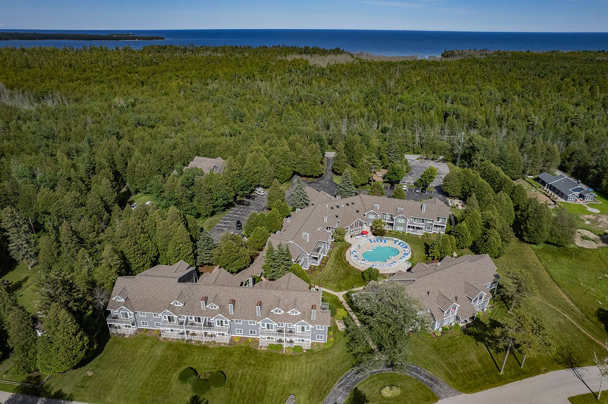
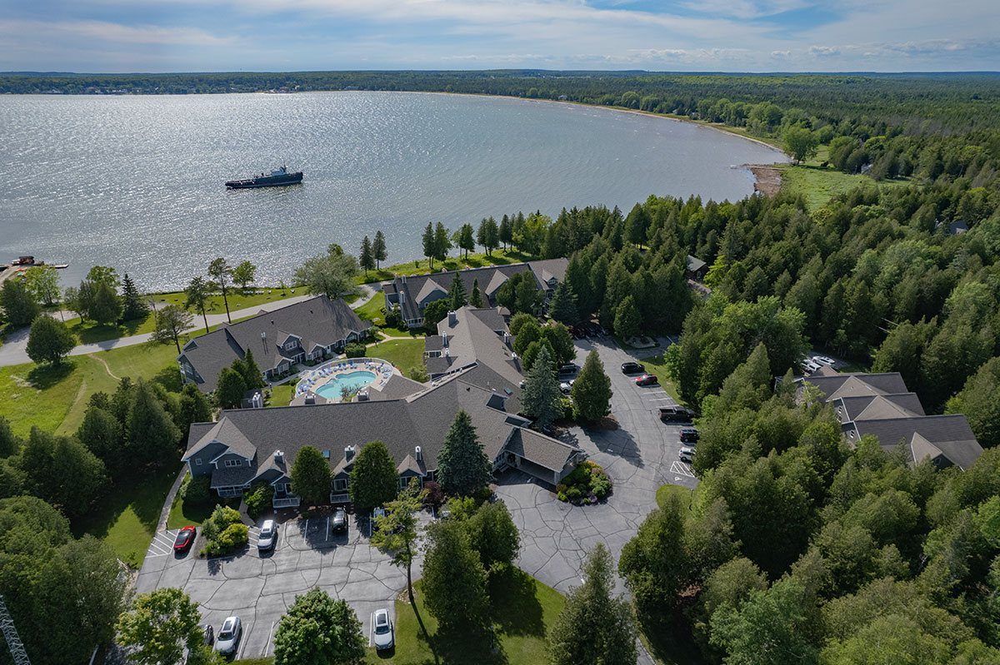
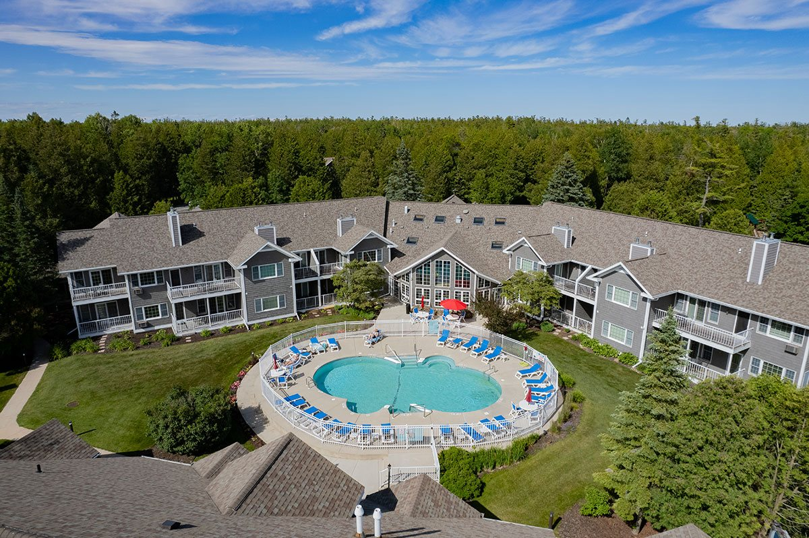
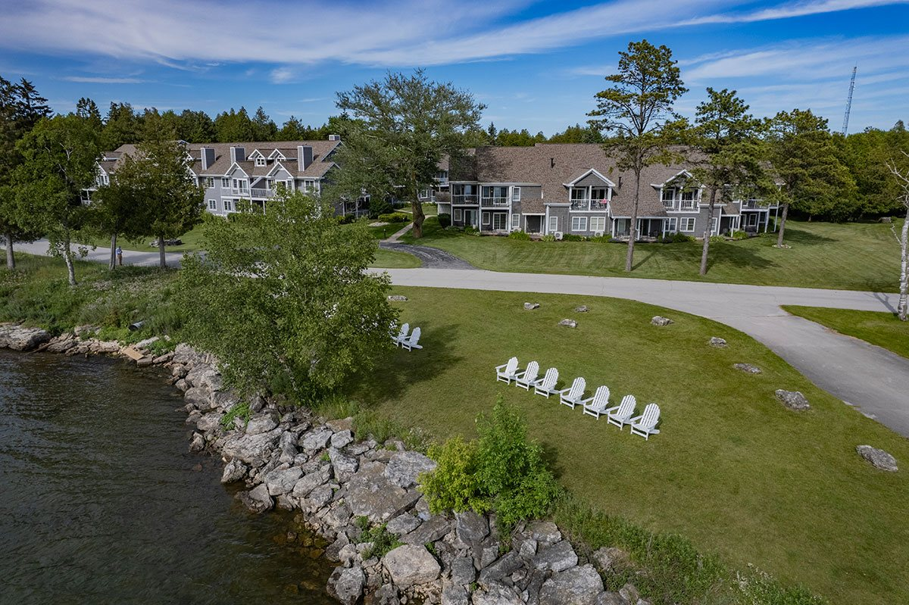

A Resort Unlike
Any Other
27 acres of waterfront on the quiet side of Door County, where Lake Michigan meets the Ridges Sanctuary.

Privately Owned,
Meticulously Maintained
Baileys Harbor Yacht Club Resort is a waterfront condominium resort on the quiet side of Door County. All of our units are privately owned and individually decorated — conforming to our highest quality standards but reflecting each owner’s personal touch.
We offer four room types — Staterooms, Junior Suites, One Bedroom Suites, and Two Bedroom Suites — with harbor, courtyard, or woodland views. Our staff will help you find the perfect accommodations for your stay.
Explore All Room Types
The Ridges,
The Shore, The Stars
Just 1.5 miles from the town of Baileys Harbor along the shore of Lake Michigan, you’ll pass the renowned Ridges Sanctuary, Baileys Harbor Ridges Park Beach, the old Birdcage Lighthouse, and the Toft Point trailhead.
Near two marinas, you’re steps from boat slips, fishing charters, kayaking, diving, and sunset cruises. On the way in, lucky guests may spot whitetail deer, wild turkey, porcupine, or the rare red fox. Keep an eye open for the 60 species of breeding birds and 12 threatened or endangered species documented in the Ridges.
Get Directions
Everything You Need
to Unwind
As a guest you have full access to our indoor and outdoor pools, hot tub, sauna, movie library, yard games, and beautifully landscaped grounds overlooking the harbor. Borrow a bike and explore Door County’s scenic roads, fire up a gas grill for dinner, or count the shooting stars from the water’s edge.
Maybe, just maybe, you’ll get a glimpse of the Northern Lights.
View All Amenities
Door County
At Your Doorstep
Our resort feels secluded and remote, yet a fifteen-minute drive puts you in the heart of all Door County has to offer. Visit beaches and state parks, watch a play under the stars at the Folklore Theatre, taste local wines, shop for fresh produce at a lakeside farmers market, or experience a traditional Friday Fish Fry.
No matter the season, there is always a festival, a trail, or a flavor worth discovering.
Explore Door County